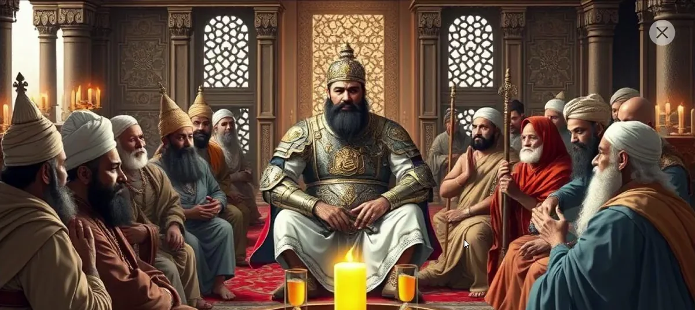
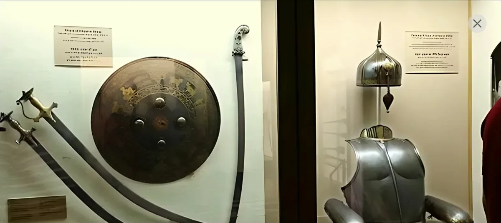

The artifact tells its own life, in the first person.
A story opens on a title card with the museum, the date and the place, then moves scene by scene, narrated in text and voice. This is the personal armour of Emperor Akbar, in seven scenes.
My Story: Personal Armour of Emperor Akbar

Forged in 1581 CE under Emperor Akbar’s command, I was a steel cuirass adorned with gold damascene and Quranic inscriptions. My high-neck collar shielded his throat, while my contours mirrored his form. More than armor, I embodied divine protection, imperial authority, and the unmatched craftsmanship of Mughal artisans.

Before earning my place, I endured Akbar’s rigorous trials: sword strikes, arrow pierces, and crushing blows. My steel held firm, my gold damascene remained pristine, and my high water marks reflected Mughal precision. More than ornamentation, I was the chosen armor of an emperor who demanded nothing less than perfection.

I debuted in Akbar’s North Indian campaign, shielding his chest, back, and throat from enemy strikes. Quranic inscriptions offered spiritual protection as I gleamed under the sun. With unmatched strategy and valor, Akbar led his army to victory, and together, we shaped the expanding might of the Mughal Empire.

Beyond battle, I graced Akbar’s courts and diplomatic missions, symbolizing his authority and divine favor. Nobles marveled at my koftgari arm guards and my helmet’s golden spike. Every detail, crafted with precision, whispered of an emperor who saw beauty in war’s armor and valued artistry as much as conquest.

After Akbar’s reign, I was carefully preserved as part of his legacy. The dents and scratches I bore from countless battles became stories etched into my steel. I rested in royal collections, a relic of an era that shaped India’s history. My gold damascene remained radiant, a testament to the skill of Mughal artisans.

In Akbar’s pursuit of harmony, I witnessed history unfold. As he met religious leaders in his Ibadat Khana, I rested beside him. My Quranic inscriptions and intricate Mughal craftsmanship embodied the fusion of faith and culture, reflecting the visionary empire Akbar sought, where diversity thrived under his enlightened rule.

Now part of the Sir Ratan Tata Art Collection, I am a testament to Akbar’s vision. My intricate Mughal craftsmanship and Quranic inscriptions reflect a prosperous, united empire where faith and culture blended. A symbol of diversity, I continue to inspire through Akbar’s enlightened rule and enduring legacy.
One story leads into another
People and objects in a scene light up on hover and open their own stories. From the armour alone, four more begin.
Why: stories that link keep a visitor exploring, the way a single label never could.

 In scene 1Emperor Akbar
In scene 1Emperor AkbarEmperor Akbar (1542-1605), the third Mughal emperor, was a visionary ruler known for his military conquests…
Discover the story In scene 3Emperor’s Sword
In scene 3Emperor’s SwordAkbar’s sword was a finely crafted weapon with curved blade, intricate engravings, and ornate hilt…
Discover the story In scene 5Raja Man Singh I
In scene 5Raja Man Singh IRaja Man Singh I was a trusted commander in Akbar’s army, leading many successful campaigns…
Discover the story In scene 7Akbar’s Sparring Set
In scene 7Akbar’s Sparring SetAkbar’s sparring set was likely custom-made, adorned with Mughal craftsmanship, and designed for both training, and demonstration…
Discover the story
Around the stories, the site explains what Relique is.